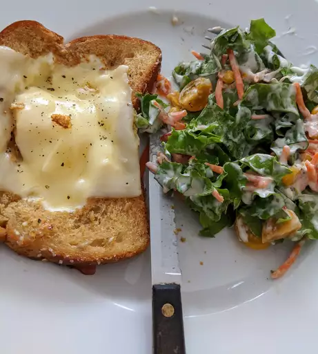

Egg in a Whole

Recipe Description
This delicious breakfast is simple yet flavorful. What I
love is the variety available to me regarding how to cook the
egg.
Ingredients
- 1 1/2 teaspoons bacon grease
- 1 slice bread
- 1 egg
- salt and ground back pepper to taste
Directions
- Melt bacon grease in a nonstick pan over low heat.
- Cut a 2-inch hole in the center of bread slice; place
in the hot skillet and cook until lightly toasted, about 2
minutes. Flip bread and crack egg into the hole; season
with salt and pepper. Continue to cook until egg is cooked
and mostly firm; flip again and cook 1 minute more. Serve
immediately.
Note
I prefer my eggs over easy or sunny side up. I personally
would not like to cook the egg as thorough as these
instructions.